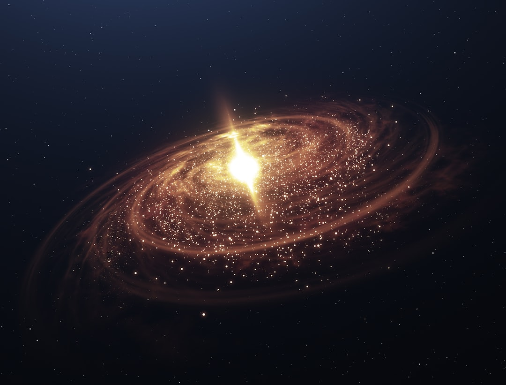

**Cosmic Rays: The Unseen Force Challenging Capitalism’s Grip on Science and Society**
**Cosmic Rays: The Unseen Force Challenging Capitalism’s Grip on Science and Society** In the vast and chaotic cosmos, remnants of ancient stars travel through the universe, infiltrating our atmosphere, and bombarding the Earth relentlessly with high-energy particles—these are cosmic rays. Yet, as we delve into the science of cosmic rays, we simultaneously explore the failure of mainstream capitalist institutions to fully grasp, explain, and harness these magnificent celestial phenomena. In a world increasingly defined by commodification and profit, the study of cosmic rays serves as a profound reminder of nature's mysteries and a glaring critique of a society that has lost its connection to the cosmos. Understanding cosmic rays is not just a scientific endeavor; it’s a lens through which we can scrutinize the capitalist project, wherein knowledge and exploration are subservient to the bottom line. For centuries, scientific inquiry has been tainted by corporate interests that dictate research directions, prioritize profit margins, and stifle radical exploration. The corporate-sponsored lens through which science is often viewed inevitably limits our understanding of phenomena that should inspire wonder and curiosity—enter cosmic rays, a cosmic revolution waiting to be acknowledged. A brief dive into the composition of cosmic rays reveals their truly incredible nature: roughly 90% are protons, with the remainder made up of larger nuclei and electrons. These particles travel through space at nearly the speed of light. When they collide with other particles in Earth's atmosphere, they produce secondary particles—an avalanche of interactions that cascade toward our planet, contributing to various cosmic phenomena such as auroras and, potentially, influencing climate patterns. The implications of cosmic rays reach far and wide beyond mere quirky science; they open pathways toward new inquiries about our world and the universe at large. For instance, studies show that cosmic rays could play a role in cloud formation and climate change—two aspects glaringly overlooked by mainstream environmental discussions often dominated by fossil fuel-funded narratives. This research suggests a connection between cosmic activity and earthly climate shifts—a connection the capitalist interests would rather sweep under the rug, as it complicates their agenda. Moreover, cosmic rays are a potential boon for technology—exciting research is yielding advancements in fields as diverse as healthcare and data processing. Radiation treatments for cancer and advanced imaging techniques stem from understanding these high-energy particles. Yet, the capitalistic framework transforms innovation into another commodity, with pharmaceutical firms jacking up prices and patenting life-saving technologies. The fight for affordable and equitable healthcare is inextricably tied to these scientific advancements, but the mechanisms of capitalism lead to a system where wealth stratifies access to knowledge and technology. The intersection of cosmic rays and our everyday existence calls for a revolution not only in science but in the system that governs it. Why should only the wealthy elite benefit from the scientific inquiry that should belong to all? The universal cosmic energies at play should inspire a call to dismantle the structures that serve the few rather than the majority. The vastness of space connects us all, yet it is our class structures that build barriers between us—even in understanding the universe. An oft-overlooked aspect of cosmic rays is the potential they hold for advancing our understanding of the universe. Cosmic rays can illuminate processes occurring in remote galaxies, helping scientists piece together the evolutionary puzzle of the cosmos. However, similar to many fields of scientific inquiry, access to this exploration can be stymied by bureaucratic gatekeeping and a focus on profit-driven research. New space missions launched to study cosmic rays, such as the Alpha Magnetic Spectrometer aboard the International Space Station, demonstrate a tantalizing glimpse into how we can harness the secrets of the universe to inform humanity. Yet, behind it lies a tangled web of corporate lobbying, funding limitations, and a vision of space exploration tethered to profit rather than the collective human endeavor. On another front, the consequences of cosmic rays extend to the world’s space exploration initiatives. With future missions on Mars and beyond relied on the knowledge gained from studying these particles, the stakes couldn’t be higher. As we send humans into uncharted territories, cosmic rays pose threats to their health—damage to DNA and increased cancer risk, to name just a few. If governments—burdened by capitalist ideologies—stick strictly to funding missions driven by profit motive, we run the risk of neglecting vital research aimed at ensuring the safety of those brave enough to venture
Updated 2025-08-03 07:42 UTC